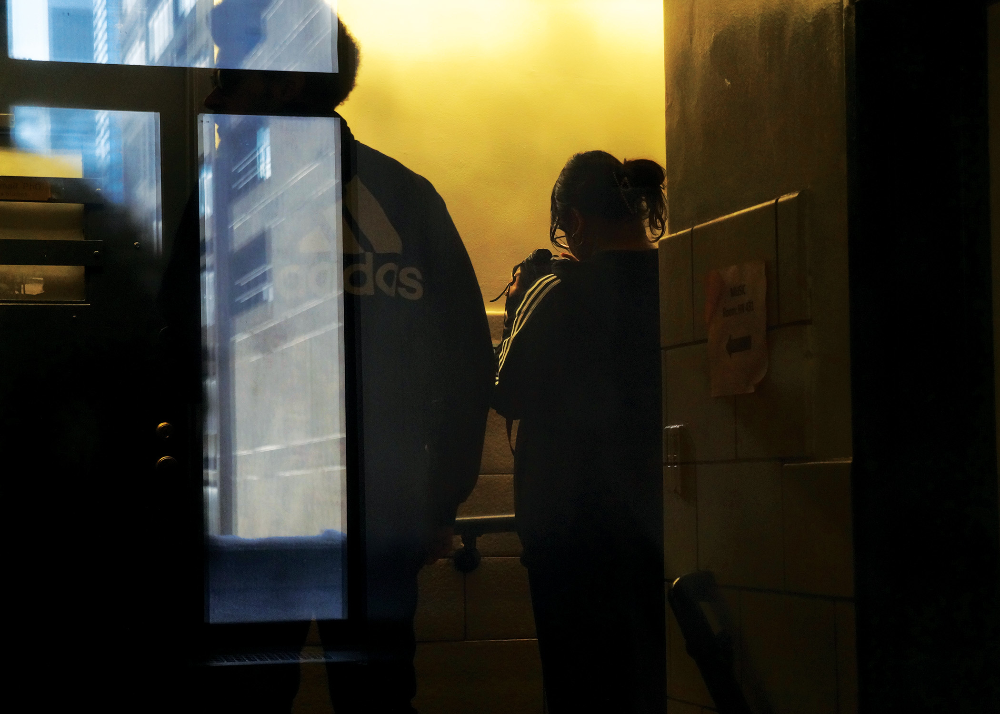

Class Shoot Photos - Homework
Two Classmates

An image taken through the window of the stairwell entrance. I enjoyed how the
window created that reflection of light in the window to the door, and wanted to capture it.
I then used different curves and level adjustments to emphasize the yellowness of the
overhead light; and emphasize the dark colors and rich midtones.
Two Exit Signs

An image taken vertically on a whim. I initially wanted to capture the face of my classmate,
but saw promise in the asymmetry and diagonal lines created by the placements of each individual sign.
I find that the doubling of the exit sign has more significance than you would initially think; hinting at
a sense of urgency but lack of anywhere to go. I used hue/saturation correction as well as curves and
level adjustments to achieve this look.